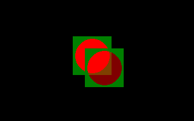

Help Center›FreeBASIC
ImageCreatefunction
Allocates and initializes storage for an image
Syntax
Declare Function ImageCreate ( ByVal width As Long, ByVal height As Long, ByVal color As ULong = transparent_color ) As Any PtrDeclare Function ImageCreate ( ByVal width As Long, ByVal height As Long, ByVal color As ULong = transparent_color, ByVal depth As Long ) As Any PtrParameters
| Name | Description | |
|---|---|---|
width | The desired width, in number of pixels. | |
height | The desired height, in number of pixels. | |
color | The pixel value to fill the area of the image. | |
depth | The desired color depth, in bits per pixel. |
Return value
If the image could not be created, NULL (
0) is returned, otherwise, the address of the image is returned. ImageCreate must be called after graphic mode initialization, else it returns 0.Consequently, in case of
Shared variable declaration, ImageCreate cannot be used as integrated initializer, even inside an Udt (in member field or constructor), because the initialization value (of shared variable) is set at the start of the program before any user code is run. The image allocation call must be in a separated executable instruction, and after the graphic mode initialization.Description
Both procedures allocate memory for an image of the specified
width and height. If not successful, NULL (0) is returned. Otherwise, an image of that size is created and initialized by filling the entire area of pixels with the value color. If not specified, color assumes the value of the transparent color for the current graphics screen, which can be found by calling ScreenControl. In any case, the address of the image is returned, which is then controlled by the user, and must be destroyed using ImageDestroy.The first procedure creates an image with a color depth matching that of the current graphics screen, which can be found by calling
ScreenControl. The second procedure creates an image with a color depth of depth, in bits per pixel. For both procedures, the resulting image can be used in drawing procedures while in any screen mode -- and across mode changes -- as long as the color depth of the image matches that of the graphics screen.ImageCreate is the recommended way to allocate memory for new images. The memory layout -- size, structure, etc. -- while documented, may change from version to version, making manual calculation of the sizes involved error-prone. However, ImageInfo can be used to retrieve, among other things, the size, in bytes, of an existing image, allowing memory to be manually allocated for a copy of an image, or to be read from or written to a file or device.Get (Graphics) can be used to initialize an image using pre-allocated memory.Remarks
Usage
result = ImageCreate( width, height [, [ color ][, depth ]] )
Dialect Differences
- Not available in the -lang qb dialect unless referenced with the alias
__Imagecreate.
Differences from QB
- New to FreeBASIC
See also
Example
'' Create a graphics screen.
ScreenRes 320, 200, 32
'' Create a 64x64 pixel image with a darkish green background.
Dim image As Any Ptr = ImageCreate( 64, 64, RGB(0, 128, 0) )
If image = 0 Then
Print "Failed to create image."
Sleep
End -1
End If
'' Draw a semi-transparent, red circle in the center of the image.
Circle image, (32, 32), 28, RGBA(255, 0, 0, 128),,, 1.0, f
'' Draw the image onto the screen using various blitting methods.
Put (120, 60), image, PSet
Put (140, 80), image, Alpha
'' Destroy the image.
ImageDestroy image
Sleep

Reference
- Documented in KeyPgImagecreate.html